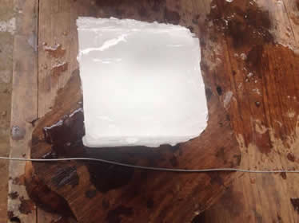
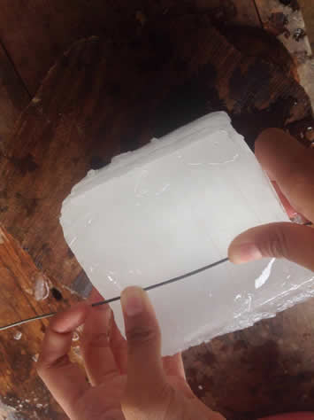
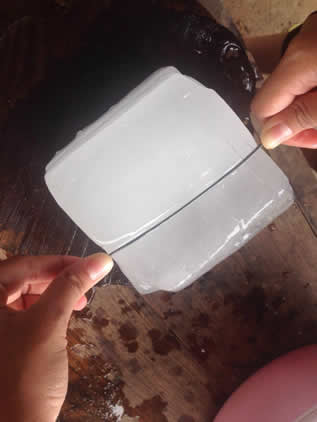

เส้นลวดสลายน้ำแข็ง
เป็นไปได้ยังไงเส้นลวดที่มีขนาดเล็กและไม่เข็งแรงพอจะสามารถตัดและสลายน้ำแข็งได้ซึ่งน้ำแข็งจะต้องใช้อะไรที่แข็งแรงๆ มาตัดน้ำแข็งเช่น มีด เป็นต้น แล้วเรายังจะทำให้เส้นลวดอยู่ในน้ำแข็งโดยกดน้ำแข็งลงไปนั่นเอง มาดูกันว่าเราจะตัดสลายน้ำแข็งแยกออกจากกันและฝังเส้นลวดในน้ำแข็งได้ยังไงมาดูกันเล๊ย
หาลวดมาสักเส้นหนึ่ง พร้อมกับเอาก้อนน้ำแข็งขนาดย่อมๆมาสักก้อน เอาก้อนน้ำแข็งวางลงบนผ้าสำลีหลังจากนั้นกดเส้นลวดลงไปบนก้อนน้ำแข็งกดอยู่เฉยๆ อย่างนั้น ไม่ต้องทำอย่างอื่น ให้เวลาผ่านไปนานประมาณ 3 นาที



จะเกิดอะไรขึ้น ถ้าแรงกดมีมากจนเกินไป ไม่นานนักก้อนน้ำแข็งจะถูกตัดขาดออกจากกันเป็นสองส่วนทันที แต่ถ้าแรงกดที่มือน้อยเกินไป เส้นลวดจะเคลื่อนที่ผ่านลงสู่พื้นผิวของน้ำแข็งและจะมีน้ำแข็งส่วนหนึ่งทับอยู่บนเส้นลวด ทำให้เส้นลวดส่วนหนึ่งถูกฝังเข้าไปในเนื้อของน้ำแข็ง